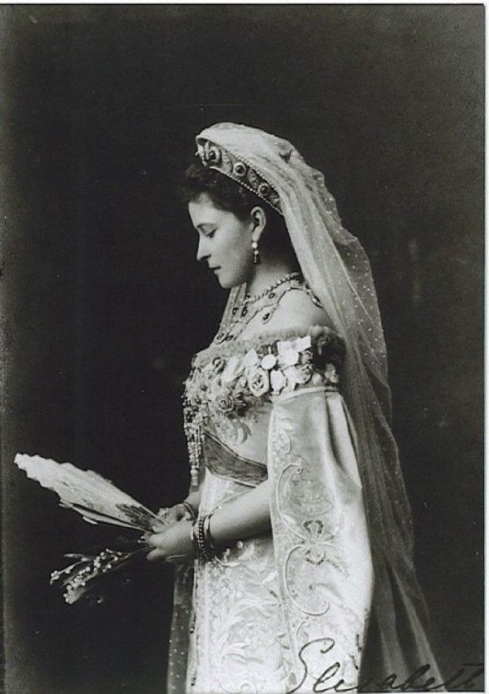
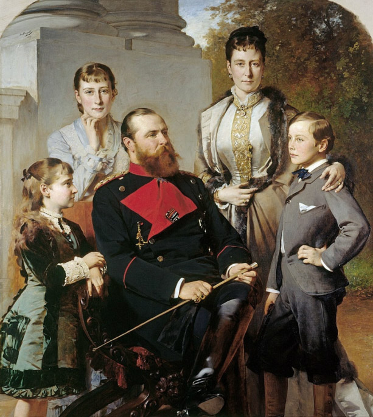

Елизавета Фёдоровна (при рождении Елизавета Александра Луиза Алиса Гессен-Дармштадтская, нем. Elisabeth Alexandra Luise Alice von Hessen-Darmstadt und bei Rhein, в семье её звали Элла, официально в России — Елисавета Феодоровна; 1 ноября 1864, Дармштадт — 18 июля 1918, Пермская губерния) — принцесса Гессен-Дармштадтская; в супружестве (за русским великим князем Сергеем Александровичем) великая княгиня царствующего дома Романовых. Почётный член и председатель Императорского православного палестинского общества с 1905 по 1917 годы. 
Основательница Марфо-Мариинской обители в Москве.
Почётный член Императорской Казанской духовной академии (звание высочайше утверждено 6 июня 1913 года).
Прославлена в лике святых Русской православной церкви в 1992 году.
В 1918 году основательницу обители милосердия раненую, но живую, сбросили в шахту в глухом лесу, чтоб никто не нашел, - по приказу главы партии большевиков В.И. Ленина.
Семья и детство
Вторая дочь великого герцога Гессен-Дармштадтского Людвига IV и принцессы Алисы, внучка английской королевы Виктории. Её младшая сестра Алиса позднее, в ноябре 1894 года, стала русской императрицей Александрой Фёдоровной, выйдя замуж за русского императора Николая II.
В 1878 г. вся семья, кроме Эллы (как её звали в семье) заболела дифтерией, от которой вскоре умерли младшая сестра Эллы, четырёхлетняя Мария и мать, великая герцогиня Алиса. Отец Людвиг IV после смерти жены заключил морганатический брак с Александриной Гуттен-Чапской, а Элла и Аликс воспитывались в основном у своей бабушки, королевы Виктории в Осборн-хаусе. С детских лет сёстры были религиозно настроены, участвовали в делах благотворительности, получили уроки по ведению домашнего хозяйства. Большую роль в духовной жизни Эллы играл образ святой Елизаветы Тюрингской, в честь которой была названа Элла: эта святая, родоначальница герцогов Гессенских, прославилась делами милосердия.
В качестве потенциального жениха для Елизаветы рассматривался её кузен Фридрих Баденский. Другой кузен, прусский кронпринц Вильгельм, некоторое время ухаживал за Елизаветой и, по неподтверждённым сведениям, даже сделал ей предложение руки и сердца, которое она отвергла.
3 июня 1884 года в Придворном соборе Зимнего дворца венчалась браком с великим князем Сергеем Александровичем, братом российского императора Александра III, о чём возвещалось высочайшим манифестом. Православное бракосочетание совершил придворный протопресвитер Иоанн Янышев; венцы держали цесаревич Николай Александрович, наследный великий герцог Гессенский, великие князья Алексей и Павел Александровичи, Дмитрий Константинович, Пётр Николаевич, Михаил и Георгий Михаиловичи; затем в Александровской зале пастором церкви Св. Анны также было совершено богослужение по лютеранскому обряду. Супруг приходился Елизавете и двоюродным дядей (общий предок — Вильгельмина Баденская), и четвероюродным братом (общий прапрадед — прусский король Фридрих Вильгельм II).
Чета поселилась в купленном Сергеем Александровичем дворце Белосельских-Белозерских (дворец стал именоваться Сергиевским), проведя медовый месяц в подмосковном имении Ильинское, где они также жили и впоследствии. По её настоянию в Ильинском была устроена больница, периодически проходили ярмарки в пользу крестьян.
В совершенстве овладела русским языком, говорила на нём почти без акцента. Ещё исповедуя протестантизм, посещала православные богослужения. В 1888 году, вместе с супругом, совершила паломничество в Святую землю.
В 1891 году приняла православие, написав перед этим своему отцу: «Я всё время думала и читала и молилась Богу — указать мне правильный путь — и пришла к заключению, что только в этой религии я могу найти настоящую и сильную веру в Бога, которую человек должен иметь, чтобы быть хорошим христианином».
Елизавета Фёдоровна и Сергей Александрович
В качестве супруги московского генерал-губернатора (великий князь Сергей Александрович был назначен на этот пост в 1891) организовала в 1892 году Елисаветинское благотворительное общество, учреждённое для того, чтобы «призревать законных младенцев беднейших матерей, дотоле помещаемых, хотя без всякого права, в Московский Воспитательный дом, под видом незаконных». Деятельность общества вначале проходила в Москве, а затем распространилась и на всю Московскую губернию. Елисаветинские комитеты были образованы при всех московских церковных приходах и во всех уездных городах Московской губернии. Кроме того, Елизавета Фёдоровна возглавила Дамский комитет Красного Креста, а после гибели супруга она была назначена председательницей Московского управления Красного Креста.
У Сергея Александровича и Елизаветы Фёдоровны не было родных детей, но они воспитывали детей брата Сергея Александровича, великого князя Павла Александровича, Марию и Дмитрия, чья мать скончалась в родах.
С началом русско-японской войны Елизавета Фёдоровна организовала Особый комитет помощи воинам, при котором в Большом Кремлёвском дворце был создан склад пожертвований в пользу воинов: там заготавливали бинты, шили одежду, собирали посылки, формировали походные церкви.
В опубликованных недавно письмах Елизаветы Федоровны к Николаю II великая княгиня предстает сторонницей самых жестких и решительных мер в отношении любого вольнодумства вообще и революционного терроризма в частности. «Неужели нельзя судить этих животных полевым судом?» — спрашивала она у императора в письме, написанном в 1902 году вскоре после убийства Сипягина, и сама же отвечала на вопрос: — «Необходимо сделать все, чтобы не допустить превращения их в героев … чтобы убить в них желание рисковать своей жизнью и совершать подобные преступления (я считаю, что пусть бы он лучше заплатил своей жизнью и таким образом исчез!). Но кто он и что он — пусть никто не знает… и нечего жалеть тех, кто сам никого не жалеет»
4 февраля 1905 года её супруг был убит террористом Иваном Каляевым, который метнул в него ручную бомбу. Тяжело переживала эту трагедию.
Греческая королева Ольга Константиновна, двоюродная сестра убитого Сергея Александровича, писала: «Это чудная, святая женщина — она — видно, достойна тяжёлого креста, поднимающего её всё выше и выше!». Позднее великая княгиня посетила в тюрьме убийцу: она передала ему прощение от имени Сергея Александровича, оставила ему Евангелие. Более того, она подала прошение императору Николаю II о помиловании террориста, но оно не было удовлетворено.
После гибели мужа Елизавета Фёдоровна заменила его на посту председателя Императорского православного палестинского общества и исполняла эту должность с 1905 по 1917 год.
Гибель
Отказалась покинуть Россию после прихода к власти большевиков, продолжая заниматься подвижнической работой в своей обители. 7 мая 1918 года, на третий день после Пасхи, в день празднования Иверской иконы Божьей Матери, патриарх Тихон посетил Марфо-Мариинскую обитель милосердия и отслужил молебен. Через полчаса после отбытия патриарха Елизавета Фёдоровна была арестована чекистами и латышскими стрелками по личному распоряжению Ф. Э. Дзержинского. Патриарх Тихон пытался добиться её освобождения, но тщетно — она была заключена под стражу и выслана из Москвы в Пермь. Одна из петроградских газет того времени — «Новый вечерний час» — в заметке от 9 мая 1918 года так откликнулась на это событие: «…мы не знаем, чем вызвана её высылка… Трудно думать, чтобы Елизавета Фёдоровна могла представлять опасность для Советской власти, и её арест и высылка могут рассматриваться скорее как… гордый жест по адресу Вильгельма, брат которого женат на родной сестре Елизаветы Фёдоровны…». Историк В. М. Хрусталёв полагал, что высылка на Урал Елизаветы Фёдоровны являлась одним из звеньев общего плана большевиков по концентрации на Урале всех представителей династии Романовых, где, как писал историк, собранных можно было бы уничтожить, лишь найдя для этого подходящий повод.
План этот осуществлялся в весенние месяцы 1918 года.
Статуи мучеников XX века на западном фасаде Вестминстерского аббатства: Максимилиан Кольбе, Манче Масемола, Джанани Лувум, Великая княгиня Елизавета Фёдоровна, Мартин Лютер Кинг, Оскар Ромеро, Дитрих Бонхёффер, Эстер Джон, Лусиан Тапиеди и Ван Чжимин
В мае 1918 года её вместе с другими представителями дома Романовых перевезли в Екатеринбург и разместили в гостинице «Атамановские номера» (в настоящее время в здании расположено управление ФСБ и ГУВД по Свердловской области, современный адрес — перекрёсток улиц Ленина и Вайнера), а затем, через два месяца, отправили в город Алапаевск.
Не теряла присутствие духа, в письмах наставляла оставшихся сестёр, завещая им хранить любовь к Богу и ближним. Вместе с ней находилась сестра из Марфо-Мариинской обители Варвара Яковлева. В Алапаевске Елизавета Фёдоровна находилась в заточении в здании Напольной школы. До сих пор возле этой школы растёт яблоня, по преданию, посаженная Великой княгиней.
В ночь на 18 июля 1918 года великая княгиня Елизавета Фёдоровна была убита большевиками: сброшена в шахту Новая Селимская в 18 км от Алапаевска.
Вместе с ней погибли:
великий князь Сергей Михайлович;
князь Иоанн Константинович;
князь Константин Константинович (младший);
князь Игорь Константинович;
князь Владимир Павлович Палей;
Фёдор Семёнович Ремез, управляющий делами великого князя Сергея Михайловича;
сестра Марфо-Мариинской обители Варвара (Яковлева).
Все они, кроме застреленного великого князя Сергея Михайловича, были сброшены в шахту живыми. Когда тела были извлечены из шахты, то было обнаружено, что некоторые жертвы жили и после падения, умирая от голода и ран. При этом рана князя Иоанна, упавшего на уступ шахты возле великой княгини Елизаветы Фёдоровны, была перевязана частью её апостольника. Окрестные крестьяне рассказывали, что несколько дней из шахты доносилось пение молитв.
31 октября 1918 года белые заняли Алапаевск. Останки убитых извлекли из шахты, положили в гробы и поставили на отпевание в кладбищенской церкви города. Однако с наступлением Красной армии тела несколько раз перевозили дальше на Восток. В апреле 1920 года в Пекине их встречал начальник Русской духовной миссии, архиепископ Иннокентий (Фигуровский). Оттуда два гроба — великой княгини Елизаветы и сестры Варвары — были перевезены в Шанхай и затем пароходом в Порт-Саид. Наконец гробы прибыли в Иерусалим.
Погребение в январе 1921 года под храмом равноапостольной Марии Магдалины в Гефсимании совершил Иерусалимский Патриарх Дамиан. Тем самым было исполнено желание самой великой княгини Елизаветы быть похороненной на Святой земле, выраженное ею во время паломничества в 1888 году.